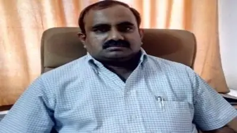

About TKRCET Campus
TKR College of Engineering and Technology - a modern temple of learning, an off shoot of the TKR Educational Society was established in the year 2002 in a sprawling, lush green 20 acre campus at Meerpet, Hyderabad. The college provides a serene and tranquil environment to the students, boosting their mental potential and preparing them in all aspects to face the cut- throat global competition with a smile on the face and emerge victorious. Sri Teegala Krishna Reddy, the Mayor of Hyderabad, is the founder chairman of TKR Educational Society. A Philanthropist by nature, "the friend of man, to vice alone of foe", and an urge to see our students excelling themselves in all fields prompted him to start the educational society; making it easy for education to be within arm's length of even a rural student and providing them with an independent and easy in the for pursuing their dreams and making them come true and in the process upholding moral and ethical values. The person puts in all his efforts to see the students excelling themselves and takes great pride in watching them carve out a niche for themselves is none other than Dr. T. Harinath Reddy, the Secretary of the college. A calm and serene countenance with sharp, twinkling eyes, he is the pivotal of encouragement and is always on the look out for avenues, which would provide the wherewithal for developing a cutting edge to their capabilities and potentialities. The college is headed by eminent principal Dr. D. V. Ravi Shankar. He obtained his AMIE in Mechanical Engineering, M.Tech and Ph.D from JNT University, Hyderabad. He published various research papers in national and international journals. The College is affiliated to Jawaharlal Nehru Technological University Kukatpally, Hyderabd. It has been approved by AICTE, New Delhi and the State Government of Telangana and has been sanctioned seven UG courses - Civil Engineering, Electrical & Electronics Engineering, Computer Science & Engineering, Electronics & Communication Engineering, Mechanical Engineering and PG Courses - M.Tech in CSE, PE & MBA. In addition the College is running second shift Polytechnic in the branches - CIVIL, EEE, MECH, ECE & CSE.
Our Magnificent Delegates
Dr. A. Suresh Rao (Vice-Principal, TKRCET)
Dr. A. Suresh Rao, Vice-Principal, TKR College of Engineering & Technology is a Professor in the Department of Computer Science & Engineering and was conferred with the PhD Degree in Computer Science & Engineering from NIT Warangal, in the year 2015. He is currently the Vice Principal, Dean of Academics and Head of the Department of Computer Science and Engineering at TKRCET. His experience spans across a period of 20 years; 02 years in the Industry and 18 Years in Teaching. Apart from teaching he is also a discerning administrator.
Institution Vision
The Institution endeavours towards imparting quality education with ethical values and strives to make students technically competent to reach heights and make our nation self-reliant and globally recognized. Through innovative teaching methods and industry collaborations, we foster a culture of innovation, entrepreneurship, and social responsibility.
Institution Mission
The Institution is committed and dedicated to mould the students into quality engineers and technologists with aplomb by providing world-class scientific and technical education through:
- Ensuring excellent branch-wise infrastructural facilities with eminent and qualified faculty.
- Making the institute a research/resource centre to enhance scope for consultancy and R & D.